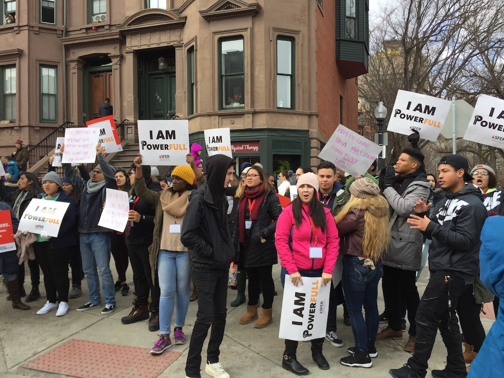
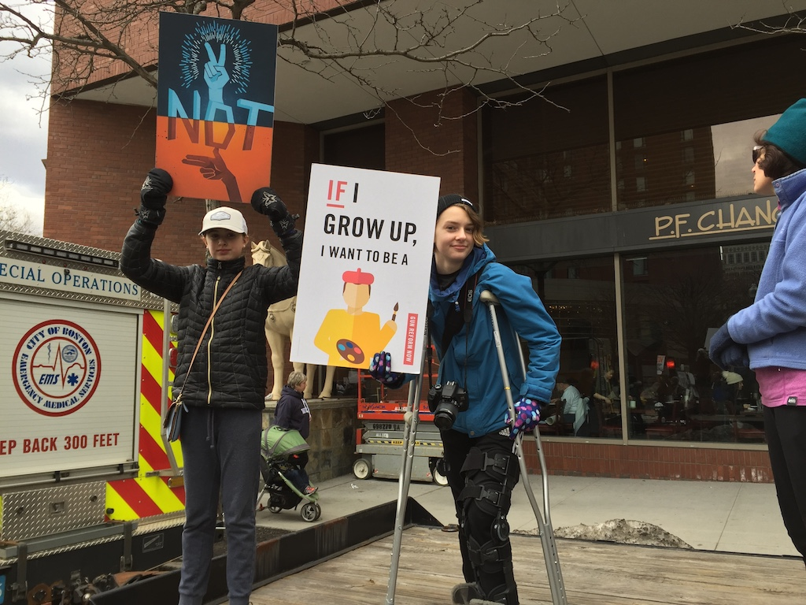
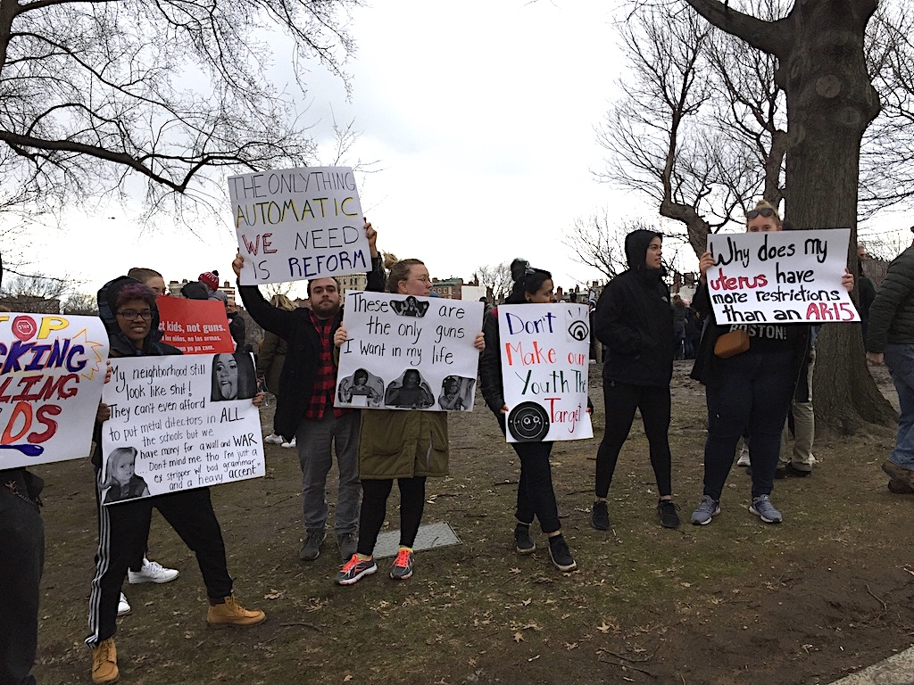
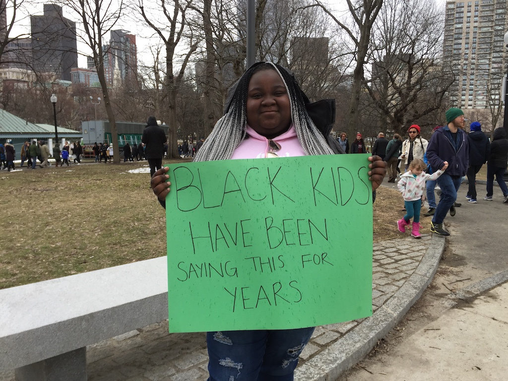
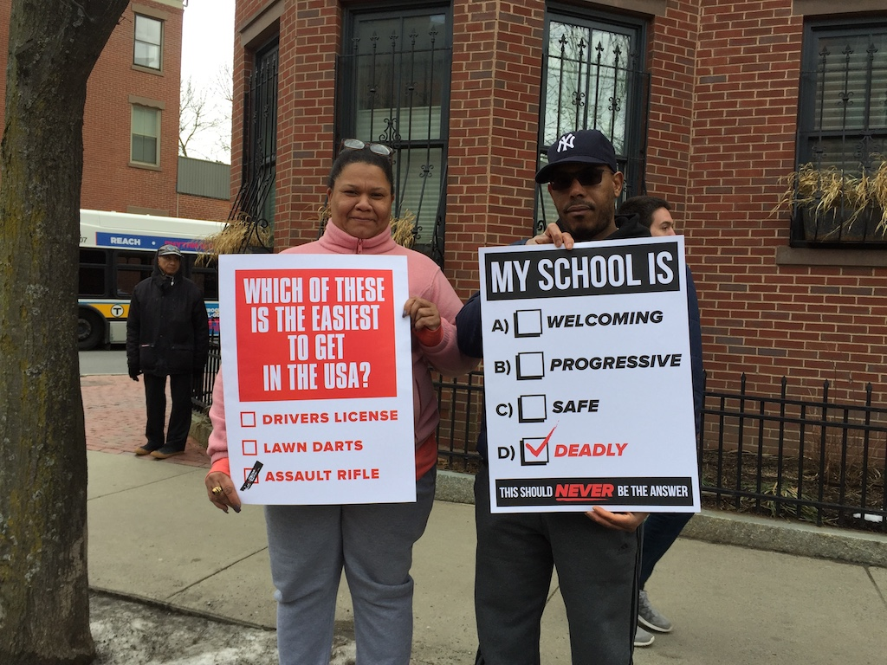
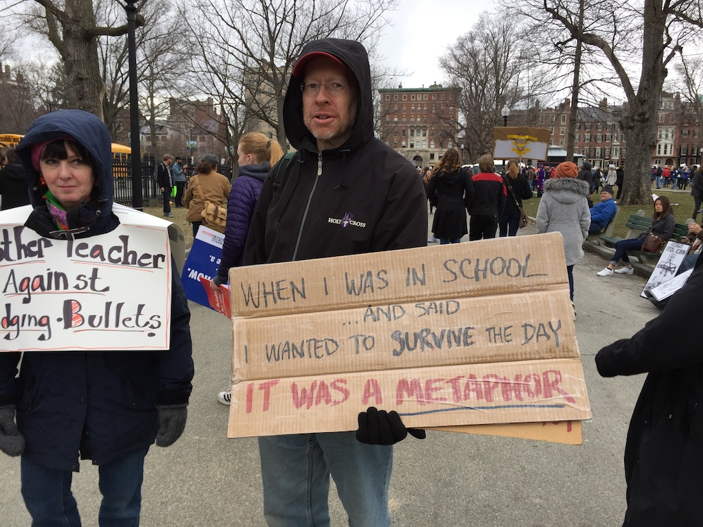

2018-03-25 08:00
We Boomers lament our waning powers if not the short time left to us. Many of us also shed tears for what might have been — changes that could have truly made the world a different place. But history won’t be kind to us for our failures and omissions. Today the world we’ve savaged is in worse shape than ever.
Of course, numerous impediments to change have always stood in the way — money, power, law, religion, capitalism, ignorance, apathy — for starters. Yet all of us either jumped whole-heartedly or dipped a reluctant toe into the system, inevitably playing our part in preserving injustices that have afflicted the nation right from the start. When we are finally gone I suspect we won’t be greatly missed.
Whether it’s just a fleeting hashtag or something greater, something like a movement is growing following the slaughter of seventeen high school students in Florida — a movement some have called a Children’s Crusade, one the religiously-inclined see echoing the words of Isaiah 11:6 — “and a small child shall lead them.” The sentiment has its appeal — a pure, new beginning.
But the children of the March for Our Lives movement — these sons and daughters, grandsons and granddaughters — are no ordinary children. These young victims of school shootings have acknowledged gun violence throughout our society. They seem to recognize intersectionality that never occurred to many of us. These young people are well-informed and fierce, and they promise to be a political force to be reckoned with. At least one hopes.
Yesterday our group of mostly older activists piled into a school bus headed for March for Our Lives in Boston. There was a distinct feeling we were there to support their efforts. It was clearly their movement, their moment, their debut. For me it was a poignant, bittersweet moment — one generation passing into irrelevance as another took up its challenges.
I also felt that these were no longer simply children to be protected. These were newly-forged Brothers and Sisters in one of a number of long-simmering national struggles.
Better than a hashtag, a moment, or a movement, I hope this represents a generational reset. As these young folks grasp political power they will need to consider all the insidious institutions they have inherited, recognize the links between violence in our communities and the violence American militarism wreaks throughout the world, and the racism and violence inherent in growing American authoritarianism.
These young Brothers and Sisters — and all who come after them — must not merely hold politicians accountable but reform the political and economic systems at the root of so many problems. And as these younger activists fill the ranks of political institutions the aging leadership must also gracefully, and rapidly, make way for them.
Our generation may not be finished yet. But our time is up.
* * *
Photos from yesterday’s march in Boston:





